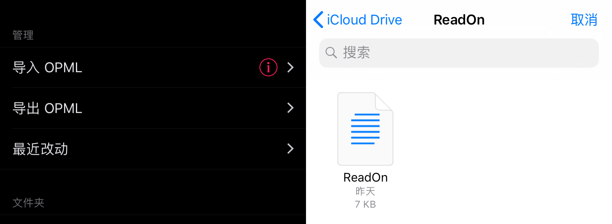
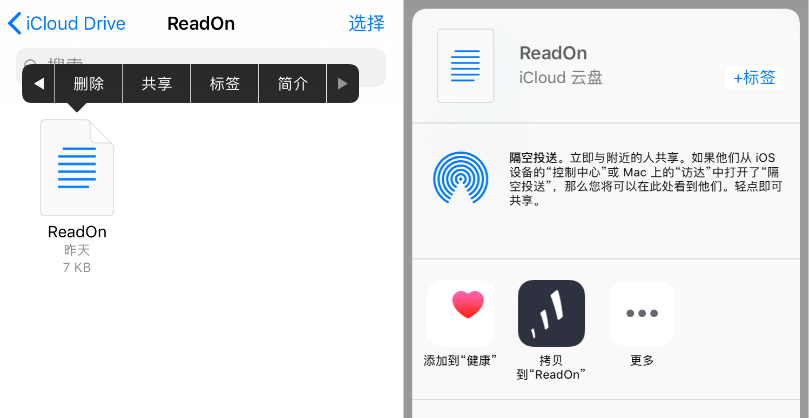
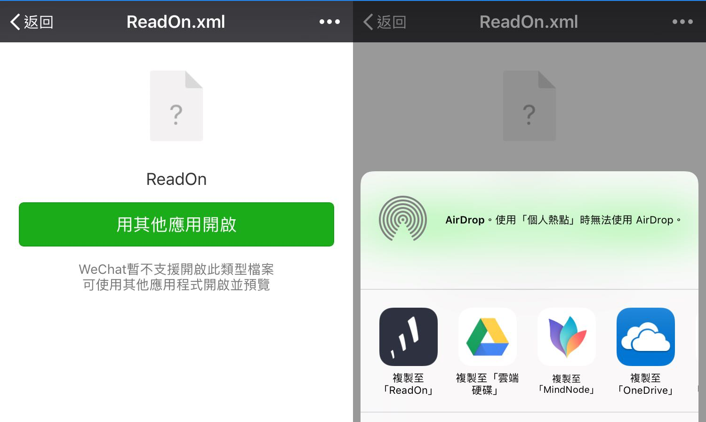

ReadOn 导入 OPML 使用说明
Import OPML
在「管理」中，点击「导入 OPML」，在弹出的 iCloud Drive 中选择 OPML 文件，支持 .xml 和 .opml 后缀

从 iCloud Drive 中分享
打开 iCloud Drive，找到 OPML 文件，长按并选择「共享」(分享)。在弹出的视图中选择「拷贝到 ReadOn」(也可能是其他描述，认准 ReadOn 图标即可)。

从其他 app 分享 OPML 至 ReadOn
还可以从其他具有分享文件功能的 app 中导入，例如微信的文件传输。
在微信文件传输中打开 OPML，选择「用其他应用打开」，同样在弹出的视图中选择 ReadOn 即可。
